AutoGen: Enabling Next-Gen LLM Applications via Multi-Agent Conversation
AutoGen：通过多智能体对话赋能下一代 LLM 应用
简介
论文针对'如何低成本开发跨领域、复杂度各异的 LLM 应用'这一问题，提出开源多智能体对话框架 AutoGen。方法上以两个抽象为核心：可由 LLM、人类、工具任意组合驱动的 conversable agent，以及将计算与控制流以对话为中心组织的 conversation programming，支持静态/动态对话模式与 GroupChatManager 动态群聊。关键结论：MATH 数据集全量 5000 题上开箱即用准确率 69.48%（vanilla GPT-4 为 55.18%）；OptiGuide 多 Agent 编码工作流代码从 430+ 行减至 100 行、用户时间节省约 3 倍、交互减少 3-5 倍；Writer/Safeguard 角色分离使不安全代码识别 F-1 提升 8%（GPT-4）/35%（GPT-3.5-turbo）。该框架与团队的多 Agent 编排、RAG 知识库问答、代码生成与审查、人机协作等场景高度契合，是 Agent 工程化的代表性基础设施论文。
问题
如何降低跨领域、不同复杂度 LLM 应用的开发成本。具体需解决两个关键问题：(1) 如何设计有能力、可复用、可定制且能在多智能体协作中有效的单个 Agent；(2) 如何提供统一简洁的接口以支持多样的 Agent 对话模式（单/多轮对话、不同人类参与程度、静态 vs 动态对话），并允许开发者用自然语言或代码编程 Agent 交互。
方法
提出 AutoGen 开源框架，核心概念有二：(1) Conversable Agent——具有角色、可收发消息、基于消息维护内部上下文的实体，能力可由 LLM、人类输入、工具（代码/函数执行）组合配置，内置 AssistantAgent 与 UserProxyAgent 两个预配置子类可复用扩展，增强 LLM 推理层提供结果缓存、错误处理、消息模板等能力；(2) Conversation Programming——将多 Agent 工作流组织为以对话为中心的计算与控制流，支持自定义 generate reply 函数、由 LLM function call 驱动的动态对话，以及 GroupChatManager 动态选择发言者并广播消息的群聊模式。基于此框架实现了数学解题、RAG 问答与代码生成、ALFWorld 决策、OptiGuide 多 Agent 编码、动态群聊、Conversational Chess 等应用。
关键结果
MATH 数据集全量 5000 题测试中，AutoGen 内置双 Agent 系统整体准确率 69.48%，高于 vanilla GPT-4 的 55.18%，且优于 Multi-Agent Debate、LangChain ReAct、ChatGPT+Code Interpreter 等对比方法
ALFWorld 134 个未见任务上，在双 Agent 系统基础上引入 grounding agent 提供常识知识，平均带来 15% 的性能提升
OptiGuide 核心工作流代码从 430+ 行降至 100 行；用户研究显示用户解题时间节省约 3 倍（Code Interpreter 平均 4 分 35 秒 vs OptiGuide 约 1.5 分钟）；2000 个问题上用户交互减少 3-5 倍
100 个编码任务（安全/不安全各半）上，多 Agent 设计（代码编写与安全审查分离）使不安全代码识别 F-1 提升 8%（GPT-4）和 35%（GPT-3.5-turbo）
Natural Questions 评测中约 19.4% 的问题触发 'Update Context' 交互式检索操作；前 500 题在无交互检索时 F1 为 23.40%、Recall 为 62.60%，交互式检索消融证明其带来非平凡收益
MiniWob++ 全部 49 个任务上 MiniWobChat 成功率 52.8%，仅比专门为该基准设计的 SOTA 方法 RCI 低 3.6%
12 个手工复杂任务试点中，动态群聊使用 role-play 式发言者选择提示比纯任务式提示成功率更高、LLM 调用更少、终止失败更少
创新点
与单 Agent 系统相比支持多 Agent LLM 应用；与同期多 Agent 系统（CAMEL、AutoGPT、BabyAGI、MetaGPT 等）相比，AutoGen 定位为通用基础设施：同时支持静态与可定制的动态对话模式、可执行 LLM 生成的代码、支持灵活的人类参与（含跳过输入选项），并以 conversable agent + conversation programming 两个抽象统一这些能力。论文还通过实验指出仅靠简单角色扮演的多 Agent 对话（如 CAMEL）不足以解决问题，具备工具/代码执行等多样能力的高能力 Agent 才是关键。
团队参考意义
相关度级别：high
命中能力域：3.3 Agent 架构与工具使用 | 3.4 多智能体协作 | 3.1 上下文工程与记忆 | 3.2 提示工程 | 3.5 评测与可靠使用
理由：论文直接命中团队多个核心能力域：3.4 多智能体协作是其主题本身（conversable agent 抽象、conversation programming、GroupChatManager 动态群聊、Agent 间消息传递与发言者选择）；3.3 Agent 架构与工具使用（LLM/人类/工具三种后端组合、代码与函数执行、function call 驱动动态对话、通过 grounding agent 打破错误循环的执行可靠性设计）；3.1 上下文工程与记忆（A2 的 RAG 系统含向量库检索与 UPDATE CONTEXT 交互式上下文更新机制、OptiGuide Commander 维护用户交互记忆、聊天消息隔离管理）；3.2 提示工程（Appendix C 系统消息中 role play、control flow、output confine、grounding 等提示技术组合，群聊 role-play 发言者选择提示）；3.5 评测与可靠使用（多基准评测、Safeguard 安全审查 Agent、可配置的人类参与模式、开发代码量与 LLM 调用次数等效率指标）。团队用 LLM/Agent 构建工程自动化工具，AutoGen 正是这类工作的代表性框架与直接参考。
建议动作：深入精读并做内部分享
中文全文
arXiv:2308.08155v2 [cs.AI] 2023年10月3日
AutoGen : Enabling Next-Gen LLM Applications via Multi-Agent Conversation
Qingyun Wu † , Gagan Bansal ∗ , Jieyu Zhang ± , Yiran Wu † , Beibin Li
Erkang Zhu ∗ , Li Jiang ∗ , Xiaoyun Zhang ∗ , Shaokun Zhang † , Jiale Liu ∓
Ahmed Awadallah ∗ , Ryen W. White ∗ , Doug Burger ∗ , Chi Wang ∗
∗ 微软研究院，† 宾夕法尼亚州立大学
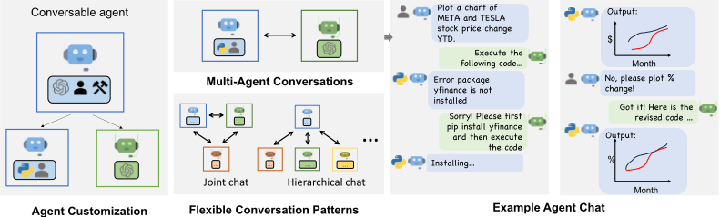
Abstract
AutoGen 2 是一个开源框架，允许开发者通过多个能够相互对话以完成任务的智能体（Agent）来构建大语言模型（LLM）应用。AutoGen 的 Agent 可定制、可对话（conversable），并能在多种模式下运行，这些模式采用 LLM、人类输入和工具的不同组合。使用 AutoGen，开发者还可以灵活地定义 Agent 交互行为。自然语言和计算机代码均可用于为不同应用编程灵活的对话模式。AutoGen 可作为构建具有各种复杂度和各种 LLM 能力的多样化应用的通用框架。实证研究表明，该框架在众多示例应用中均展现出有效性，其领域涵盖数学、编程、问答、运筹学、在线决策、娱乐等。
1 通讯作者。Email：auto-gen@outlook.com
2 https://github.com/microsoft/autogen
∗ 1
1 Introduction
大语言模型（Large Language Model, LLM）正在成为开发强大智能体的关键构建模块，这些智能体在众多现实世界任务中利用 LLM 进行推理、工具调用，并适应新的观察结果（Yao et al., 2022; Xi et al., 2023; Wang et al., 2023b）。鉴于能够受益于 LLM 的任务范围不断扩大、任务复杂度日益提升，扩展智能体能力的一种直观方法是采用多个相互协作的智能体。先前的工作表明，多个智能体有助于激发发散性思维（Liang et al., 2023）、提升事实性与推理能力（Du et al., 2023），并提供验证（Wu et al., 2023）。基于上述直觉以及初步展现出的前景，一个引人探究的问题是：我们如何基于多智能体（multi-agent）方法，促进开发能够覆盖广泛领域与复杂度范围的 LLM 应用？
我们的洞察是利用多智能体对话来实现这一目标。得益于 LLM 的最新进展，至少有三个理由可以证实其普遍的可行性与实用性：第一，由于针对对话优化的 LLM（例如 GPT-4）展现出吸纳反馈的能力，LLM Agent 可以通过对话彼此协作或与人类协作，例如在对话中相互提供并寻求推理、观察、批评和验证。第二，由于单个 LLM 可以展现出广泛的能力（尤其是在配置了正确的提示与推理设置时），不同配置的 Agent 之间的对话有助于以模块化且互补的方式组合这些广泛的 LLM 能力。第三，LLM 已展现出在将任务分解为更简单的子任务时解决复杂任务的能力。多智能体对话能够以直观的方式实现这种划分与整合。我们如何利用上述洞察，来支持那些共同需求为协调多个 Agent 的各类应用——这些 Agent 可能由能力各异的 LLM、人类或工具提供支撑？我们期望拥有一个具备通用抽象与有效实现的多智能体对话框架，它具有满足不同应用需求的灵活性。实现这一目标需要解决两个关键问题：（1）我们如何设计出能力强、可复用、可定制且在多智能体协作中行之有效的单个 Agent？（2）我们如何开发一个简单直接且统一的接口，以容纳广泛的 Agent 对话模式？在实践中，复杂度各异的应用可能需要由具备特定能力的 Agent 组成的不同集合，并可能需要不同的对话模式，例如单轮或多轮对话、不同的人类参与模式，以及静态对话与动态对话。此外，开发者可能更希望拥有以自然语言或代码对 Agent 交互进行编程的灵活性。若未能充分解决这两个问题，将限制该框架的适用范围与通用性。
尽管同时期已有针对多智能体方法的探索，3 我们仍基于以下新概念提出了 AutoGen——一个通用化的多智能体对话框架（图 1）。
3 有关详细讨论，请参阅附录 A。
AutoGen 还提供了一系列使用可对话 Agent 和对话编程创建的多智能体应用。这些应用展示了 AutoGen 如何轻松支持各种复杂度的应用以及具备各种能力的 LLM。此外，我们既在基准测试（benchmark）上进行了评估，也对新应用开展了试点研究。结果表明，AutoGen 有助于在许多任务上取得出色表现，并能够实现使用 LLM 的创新方式，同时减少开发工作量。（第 3 节和附录 D）
2 The AutoGen Framework
为了减少开发人员在各个领域创建复杂 LLM 应用所需的工作量，AutoGen 的一个核心设计原则是利用多智能体对话来简化和整合多智能体工作流。这种方法还旨在最大限度地提高已实现 Agent 的可复用性。本节介绍 AutoGen 的两个关键概念：可对话 Agent 和对话编程。
2.1 Conversable Agents
在 AutoGen 中，可对话 Agent（conversable agent）是一种具有特定角色的实体，它可以通过传递消息与其他可对话 Agent 相互发送和接收信息，例如用于启动或延续一段对话。它基于已发送和已接收的消息来维护其内部上下文，并且可以被配置为具备一组能力，例如由大语言模型（LLM）、工具或人类输入等赋能的能力。这些 Agent 可以按照下文所述的编程行为模式采取行动。
由 LLM、人类和工具赋能的 Agent 能力。由于 Agent 的能力直接影响其处理和响应消息的方式，AutoGen 允许灵活地为 Agent 赋予各种能力。AutoGen 为 Agent 支持许多常见的可组合能力，包括：1) LLM。由 LLM 支持的 Agent 能够利用先进 LLM 的诸多能力，例如角色扮演、基于对话历史的隐式状态推断与进展推进、提供反馈、根据反馈进行调整以及编写代码。这些能力可以通过新颖的提示技术 4 以不同方式进行组合，从而提升 Agent 的技能和自主性。AutoGen 还通过一个增强的 LLM 推理层提供增强的 LLM 推理功能，例如结果缓存、错误处理、消息模板化等。2) 人类。在许多 LLM 应用中，人类的参与是所期望的，甚至是必不可少的。AutoGen 允许人类通过由人类支持的 Agent 参与 Agent 对话，这类 Agent 可根据 Agent 配置在对话的特定轮次征求人类输入。默认用户代理 Agent（user proxy agent）支持可配置的人类参与程度和模式，例如请求人类输入的频率和条件，包括人类可选择跳过提供输入的选项。3) 工具。由工具支持的 Agent 具备通过代码执行或函数执行来运行工具的能力。例如，AutoGen 中的默认用户代理 Agent 能够执行 LLM 建议的代码，或发起 LLM 建议的函数调用。
Agent 的定制与协作。根据特定应用的需求，每个 Agent 都可以被配置为具备多种基本后端类型的组合，从而在多智能体对话中展现复杂行为。AutoGen 支持通过复用或扩展内置 Agent 来轻松创建具有专门能力和角色的 Agent。图 2 中黄色阴影区域给出了 AutoGen 内置 Agent 的示意图。ConversableAgent 类是最高层级的 Agent 抽象，默认情况下可以使用 LLM、人类和工具。AssistantAgent 和 UserProxyAgent 是两个预先配置的 ConversableAgent 子类，各自代表一种常见的使用模式，即充当 AI 助手（由 LLM 支持），以及充当人类代理来征求人类输入或执行代码/函数调用（由人类和/或工具支持）。
在图 1 右侧的示例中，一个由 LLM 支持的助手 Agent 与一个由工具和人类支持的用户代理 Agent 被共同部署以完成一项任务。在这里，助手 Agent 借助 LLM 生成解决方案，并将该解决方案传递给用户代理 Agent。随后，用户代理 Agent 征求人类输入或执行助手的代码，并将结果作为反馈传回给助手。
4 附录 C 给出了此类新颖提示技术的一个示例，该示例使 AutoGen 中默认的由 LLM 支持的助手 Agent 能够与其他 Agent 进行对话以完成多步问题求解。
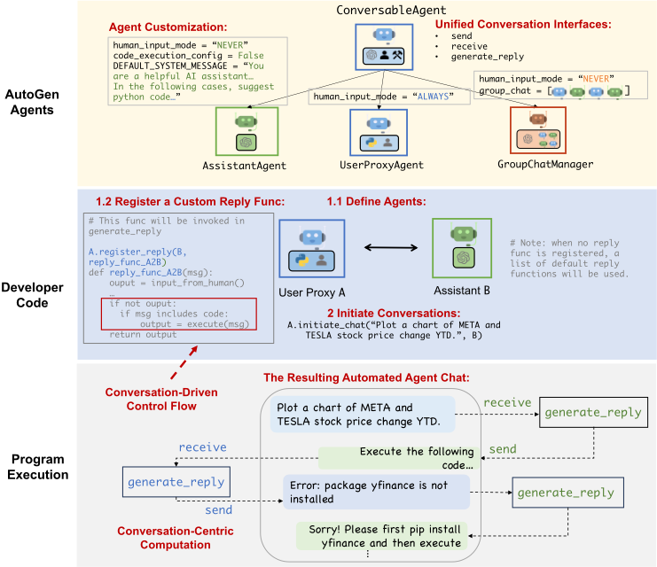
通过允许自定义的 Agent 相互对话，AutoGen 中的可对话 Agent 可以作为一个有用的构建模块。然而，要开发能让 Agent 在任务上取得实质性进展的应用，开发人员还需要能够指定并塑造这些多智能体对话。
2.2 Conversation Programming
作为对上述问题的一种解决方案，AutoGen 采用了对话编程（conversation programming）这一范式，该范式涉及两个概念：第一个是计算（computation），即 Agent 在多智能体对话中为得出其响应所采取的动作；第二个是控制流（control flow），即这些计算发生的顺序（或条件）。正如我们将在应用章节中所展示的，对这些方面进行编程的能力有助于实现许多灵活的多智能体对话模式。在 AutoGen 中，这些计算是以对话为中心的：Agent 采取与其所参与的对话相关的动作，而其动作会导致消息传递，从而引发后续对话（除非满足某个终止条件）。类似地，控制流是由对话驱动的——参与对话的 Agent 关于向哪些 Agent 发送消息的决策以及计算的过程，都是 Agent 间对话的函数。这一范式有助于人们直观地对复杂工作流进行推理，将其视为 Agent 的动作执行以及 Agent 之间的对话消息传递。
图 2 给出了一个简单的示意。底部的子图展示了各个 Agent 如何执行其特定角色的、以对话为中心的计算来生成响应（例如，通过 LLM 推理调用和代码执行）。任务通过对话框中显示的对话不断向前推进。中间的子图展示了一种基于对话的控制流。当助手 Agent 收到消息时，用户代理 Agent 通常会将人类输入作为回复发送；如果没有输入，它则转而执行助手 Agent 消息中的代码。
4
AutoGen 提供了以下设计模式以支持对话编程：
在对话编程范式中，人们可以实现多种不同模式的多智能体对话。除了具有预定义流程的静态对话之外，AutoGen 还支持涉及多个 Agent 的动态对话流程。AutoGen 提供了两种通用的方式来实现这一点：1）自定义 generate_reply 函数：在自定义的 generate_reply 函数中，一个 Agent 可以在维持当前对话的同时，根据当前消息的内容和上下文调用与其他 Agent 的对话。2）函数调用（function calling）：在这种方式中，LLM 根据对话状态决定是否调用某个特定函数。通过在被调用的函数中向其他 Agent 发送消息，LLM 可以驱动动态的多智能体对话。此外，AutoGen 通过内置的 GroupChatManager 支持更复杂的动态群聊（group chat），它可以动态选择下一个发言者，然后将其响应广播给其他 Agent。我们将在第 3 节中详细阐述这一特性及其应用。我们提供了已实现的可运行系统来展示所有这些不同的模式，其中一些模式在图 3 中给出了可视化展示。
3 Applications of AutoGen
我们使用 AutoGen 演示了六个应用（见图 3），以展示其在简化高性能多智能体应用开发方面的潜力。这些应用的选择依据包括：与现实世界的相关性（A1、A2、A4、A5、A6）、问题难度以及 AutoGen 所赋予的求解能力（A1、A2、A3、A4），以及创新潜力（A5、A6）。这些标准共同彰显了 AutoGen 在推动大语言模型（LLM）应用格局发展中所发挥的作用。
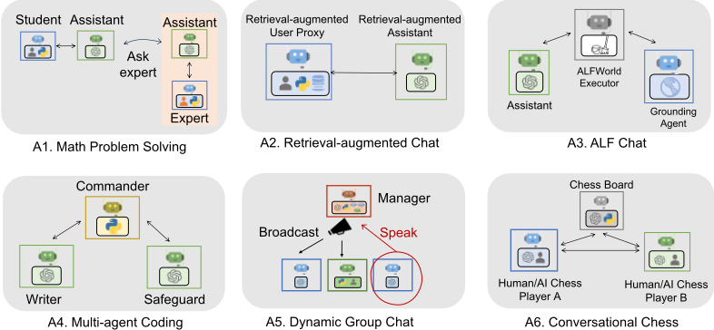
A1: Math Problem Solving
数学是一门基础学科，利用大语言模型（LLM）辅助数学问题求解的前景开辟了大量新的应用与探索途径，包括个性化 AI 辅导、AI 科研辅助等。本节演示 AutoGen 如何帮助开发面向数学问题求解的 LLM 应用，展示其在支持多种问题求解范式方面的强大性能与灵活性。
（场景 1）通过直接复用 AutoGen 中的两个内置智能体，我们构建了一个自主数学问题求解系统。我们在 MATH（Hendrycks et al., 2021）数据集上评估了我们的系统及若干替代方法，包括 Multi-Agent Debate（Liang et al., 2023）、LangChain ReAct（LangChain, 2023）、vanilla GPT-4 等开源方法，以及商业产品 ChatGPT + Code Interpreter 和 ChatGPT + Plugin（Wolfram Alpha），并将结果汇总于图 4a。我们在 120 道随机选取的 level-5 题目以及 MATH 的全部 5 个测试数据集上进行了评估。结果表明，AutoGen 的内置智能体开箱即用即可取得优于各替代方法的性能，甚至优于其中的商业产品。（场景 2）我们还借助 AutoGen 展示了人在回路（human-in-the-loop）的问题求解过程。要在 AutoGen 中引入人类反馈，只需将场景 1 系统中 UserProxyAgent 的 human input mode 设置为 'ALWAYS' 即可。我们证明，该系统能够有效融合人类输入，从而解决没有人类参与便无法解决的难题。（场景 3）我们进一步展示了一个新颖场景：多名人类用户可以在问题求解过程中参与对话。针对这些场景的实验与案例研究表明，与我们试验过的其他方案相比，AutoGen 能够带来更好的性能或新的体验。由于篇幅限制，评估的详细内容（包括三个场景的案例研究）见附录 D。
A2: Retrieval-Augmented Code Generation and Question Answering
检索增强（Retrieval augmentation）已成为一种通过引入外部文档来缓解大语言模型（LLM）内在局限的实用且有效的方法。在本节中，我们使用 AutoGen 构建了一个名为 Retrieval-augmented Chat 的检索增强生成（RAG）系统（Lewis et al., 2020; Parvez et al., 2021）。该系统由两个智能体组成：Retrieval-augmented User Proxy 智能体和 Retrieval-augmented Assistant 智能体，二者均由 AutoGen 的内置智能体扩展而来。Retrieval-augmented User Proxy 包含一个向量数据库（Chroma，
5 我们未在整个数据集上评估 ChatGPT，因为这需要大量的人工投入，且受其每小时消息数量限制的约束。Multi-agent debate 和 LangChain ReAct 也未被评估，因为它们在较小的测试集上表现不如原版 GPT-4。
![Figure 4: Performance on four applications A1-A4. (a) shows that AutoGen agents can be used out of the box to achieve the most competitive performance on math problem solving tasks; (b) shows that AutoGen can be used to realize effective retrieval augmentation and realize a novel interactive retrieval feature to boost performance on Q&A tasks; (c) shows that AutoGen can be used to introduce a three-agent system with a grounding agent to improve performance on ALFWorld; (d) shows that a multi-agent design is helpful in boosting performance in coding tasks that need safeguards.](assets/a199/figures/fig_4.png)
2023），并使用 SentenceTransformers（Reimers & Gurevych, 2019）作为上下文检索器。附录 D 中提供了 Retrieval-augmented Chat 的详细工作流程描述。
我们在问答和代码生成两种场景下对 Retrieval-augmented Chat 进行评估。（场景 1）我们首先在 Natural Questions 数据集（Kwiatkowski et al., 2019）上针对自然问题回答进行评估，并在图
A3: Decision Making in Text World Environments
A4: Multi-Agent Coding
在本小节中，我们使用 AutoGen 构建了一个基于 OptiGuide (Li et al., 2023a) 的多智能体编码系统。OptiGuide 是一个擅长编写代码来解释优化方案并回答用户问题的系统，例如探究更改某项供应链决策所带来的影响，或理解优化器为何做出某个特定选择。图 3 的第二个子图展示了基于 AutoGen 的实现。其工作流程如下：终端用户向 Commander 智能体发送问题，例如“如果我们禁止从供应商 1 向烘焙厂 2 发货会怎样？”。Commander 与两个助手智能体（包括 Writer 和 Safeguard）协同来回答该问题。Writer 负责编写代码并将代码发送给 Commander。Commander 收到代码后，会与 Safeguard 一起检查代码的安全性；如果通过检查，Commander 将使用外部工具（例如 Python）执行代码，并请 Writer 解释执行结果。例如，Writer 可能会说：“如果我们禁止从供应商 1 向烘焙厂 2 发货，总成本将增加 10.5%。”随后，Commander 将这一结论性答案提供给终端用户。如果在某个特定步骤出现异常，例如 Safeguard 发出安全红旗警告，Commander 会将该问题连同调试信息一起转回给 Writer。这一过程可能会重复多次，直到用户的问题得到解答或超时为止。
借助 AutoGen，OptiGuide 的核心工作流代码从 430 多行减少到 100 行，带来了显著的生产力提升。我们在附录 D 中提供了 ChatGPT+Code Interpreter 与基于 AutoGen 的 OptiGuide 在用户体验方面的详细对比，结果表明基于 AutoGen 的 OptiGuide 可为用户节省约 3 倍的时间，并平均减少 3–5 倍的用户交互。我们还进行了一项消融实验，证明多智能体抽象是必要的。具体而言，我们构建了一种单智能体方法，由单个智能体同时执行代码编写和安全保障两个流程。我们在一个包含 100 个编码任务的数据集上测试了单智能体和多智能体两种方法，该数据集经过精心构建，安全任务与不安全任务数量相等。如图 4d 所示的评估结果表明，多智能体设计将识别不安全代码的 F-1 分数提升了 8%（使用 GPT-4）和 35%（使用 GPT-3.5-turbo）。
7 ReAct 的结果是通过直接运行其官方代码并采用默认设置获得的。该代码使用 text-davinci-003 作为后端语言模型（LM），不支持 GPT-3.5-turbo 或 GPT-4。
8
A5: Dynamic Group Chat
AutoGen 原生支持动态群聊（dynamic group chat）这一通信模式：参与的 Agent 共享相同的上下文，并以动态的方式与其他 Agent 交谈，而不是遵循预先定义的顺序。动态群聊依靠正在进行的对话来引导 Agent 之间交互的流程。这些特性使得动态群聊非常适合于无需严格通信顺序的协作更为有利的情形。在 AutoGen 中，GroupChatManager 类充当 Agent 之间对话的指挥者，并重复执行以下三个步骤：动态选择发言者、从被选中的发言者处收集回复、以及广播消息（图 3-A5）。对于动态发言者选择组件，我们采用了角色扮演风格的提示（prompt）。通过对 12 个手工构建的复杂任务开展的初步研究，我们观察到：与纯粹基于任务的提示相比，使用角色扮演提示通常能够在问题求解和发言者选择过程中更有效地兼顾对话上下文与角色对齐。因此，这带来了更高的成功率和更少的 LLM 调用。我们在附录 D 中给出了详细结果。
A6: Conversational Chess
利用 AutoGen，我们开发了 Conversational Chess（对话式国际象棋），这是一种采用自然语言界面的游戏，如图 3 的最后一个子图所示。该游戏内置了玩家 agent（可以是人类或 LLM），以及一个第三方棋盘 agent，用于提供信息并依据标准规则验证走法。
借助 AutoGen，我们实现了两项核心特性：（1）自然、灵活且引人入胜的游戏动态，这得益于 AutoGen 中可定制的 agent 设计。Conversational Chess 支持多种对弈模式，包括 AI-AI、AI-人类和人类-人类，并且可以在单局游戏中在这些模式之间无缝切换。这些富有趣味的游戏动态的一个示例见附录 D 中的图 15。（2）接地（grounding），这是维持游戏完整性的一个至关重要的方面。在对弈过程中，棋盘 agent 会检查每个提议走法的合法性；如果某个走法无效，该 agent 会返回错误信息，促使玩家 agent 在继续之前重新提出一个合法走法。这一过程确保只有有效的走法才会被走出，并有助于保持一致的游戏体验。作为一项消融实验（ablation study），我们移除了棋盘 agent，转而仅依赖一条相关提示（prompt）——“you should make sure both you and the opponent are making legal moves”（你应当确保你和对手都在走合法的棋步）——来为其走法提供接地。结果突出表明，在没有棋盘 agent 的情况下，非法走法会导致游戏进程紊乱。模块化设计提供了灵活性，使我们能够针对不断演变的游戏规则或各种国际象棋规则变体快速调整棋盘 agent。该消融实验的完整演示见附录 D。
4 Discussion
我们介绍了开源库 AutoGen，它融合了可对话 Agent（conversable agent）与会话编程（conversation programming）这两种范式。该库利用能力强大、非常适合多智能体协作的 Agent。它具备 Agent 之间统一的会话接口以及自动回复机制，这有助于建立一个 Agent 交互接口，既能充分发挥具备广泛能力的、面向聊天优化的大语言模型（LLM）的优势，又能适应广泛的应用。AutoGen 作为一个通用框架，可用于创建和试验多智能体系统，能够轻松满足各种实际需求，例如复用、定制和扩展现有 Agent，以及对它们之间的会话进行编程。
如第 3 节所述，我们的实验表明该方法带来了诸多益处。采用 AutoGen 使现有应用的性能得到提升（优于最先进的方法）、开发代码量减少、人工负担降低。它为开发者提供了灵活性，这一点在 A1（场景 3）、A5 和 A6 中得到了体现：AutoGen 使多智能体对话能够遵循动态模式，而非固定的来回交互。它允许人类以对话方式与多个 AI Agent 共同参与活动。尽管这些应用较为复杂（大多数涉及两个以上的 Agent 或动态的多轮 Agent 协作），基于 AutoGen 的实现仍然简单直接。将任务划分给不同的 Agent 促进了模块化。此外，由于每个 Agent 都可以单独开发、测试和维护，这种方法简化了整体开发和代码管理。
尽管这项工作仍处于早期实验阶段，但它为众多未来方向和研究机会铺平了道路。例如，我们可以探索将现有 Agent 实现有效集成到我们的多智能体框架中，并研究多智能体工作流中自动化与人类控制之间的最佳平衡。随着我们进一步开发和完善 AutoGen，我们旨在研究哪些策略——例如 Agent 拓扑和会话模式——能够带来最有效的多智能体对话，同时优化整体效率等因素。虽然增加 Agent 数量和其他自由度为解决更复杂的问题提供了机会，但也可能引入新的安全挑战，需要进一步研究和审慎考量。
我们在附录 B 中提供了更多讨论，包括使用 AutoGen 的指南以及未来工作方向。我们希望 AutoGen 能够在开发速度、实验便捷性以及整体有效性和安全性方面帮助改进许多 LLM 应用。我们积极欢迎更广泛社区的贡献。
Ethics statement
AutoGen 框架的开发和使用可能引发若干潜在的伦理考量。
A Related Work
我们考察了现有的可用于构建大语言模型（LLM）应用的基于 LLM 的智能体系统或框架。我们将相关工作分为单智能体系统和多智能体（multi-agent）系统两类，并在表 1 中专门给出了 AutoGen 与现有多智能体系统相比的差异点总结。请注意，这些系统中有许多是不断演进的开源项目，因此关于它们的评述和陈述可能仅在撰写本文时是准确的。有兴趣的读者可参阅关于基于 LLM 的智能体的详细综述（Xi et al., 2023; Wang et al., 2023b）
Single-Agent Systems:
AutoGen 与上述单智能体系统的不同之处在于，它支持多智能体 LLM 应用。
Multi-Agent Systems:
14
还有一些其他专门的单智能体或多智能体系统，例如 Voyager（Wang et al., 2023a）和 Generative Agents（Park et al., 2023），由于相关性较低，我们在此不予讨论。在表 1 中，我们总结了 AutoGen 与最相关的多智能体系统之间的差异。
| Aspect | AutoGen | Multi-agent Debate | CAMEL | BabyAGI | MetaGPT |
|---|---|---|---|---|---|
| Infrastructure | ✓ | ✗ | ✓ | ✗ | ✗ |
| Conversation pattern | flexible | static | static | static | static |
| Execution-capable | ✓ | ✗ | ✗ | ✗ | ✓ |
| Human involvement | chat/skip | ✗ | ✗ | ✗ | ✗ |
| Aspect | AutoGen | Multi-agent Debate | CAMEL | BabyAGI | MetaGPT |
15
B Expanded Discussion
第 3 节中的应用展示了 AutoGen 不仅能够支持新应用，还有助于改造现有应用。例如，在 A1（场景 3）、A5 和 A6 中，AutoGen 使得创建遵循动态模式而非固定来回模式的多智能体对话成为可能。在 A5 和 A6 中，人类都可以以对话方式与多个其他 AI 智能体共同参与活动。类似地，A1-A4 展示了如何利用 AutoGen 快速改造流行的应用。尽管这些应用较为复杂（其中大多数涉及两个以上的智能体或动态的多轮智能体协作），我们基于 AutoGen 的实现仍然保持简洁，这表明构建创造性应用前景可观，创新空间巨大。在思考为什么这些应用能够借助 AutoGen 实现这些优势时，我们认为有以下几个原因：
B.1 General Guidelines for Using AutoGen
下面我们给出一些在 AutoGen 中使用 Agent 来完成任务的建议。
human input mode = 'NEVER'。这一设置使大语言模型（LLM）可以作为后端使用，此时既可以直接使用 LLM，也可以手动生成多样化的系统消息来模拟不同的用例。
B.2 Future Work
这项工作提出了许多研究问题和未来方向。
设计最优的多智能体工作流：为给定任务创建多智能体工作流可能涉及许多决策，例如，应包含多少个 Agent、如何分配 Agent 角色和 Agent 能力、Agent 之间应如何相互交互，以及是否将工作流中的某个特定部分自动化。可能并不存在放之四海而皆准的答案，最佳解决方案可能取决于具体应用。这引出了一些重要问题：多智能体工作流对哪些类型的任务和应用最为有用？多个 Agent 在不同应用中能提供怎样的帮助？对于给定任务，什么才是最优的（例如，高性价比的）多智能体工作流？
创建高能力 Agent：AutoGen 能够支持开发充分利用 LLM、工具和人类优势的高能力 Agent。创建此类 Agent 对于确保多智能体工作流能够有效排查问题并在任务上取得进展至关重要。例如，我们观察到另一个多智能体 LLM 系统 CAMEL 在大多数情况下无法有效解决问题，其主要原因在于它缺乏执行工具或代码的能力。这一失败表明，仅有 LLM 以及简单角色扮演的多智能体对话是不够的，拥有多样化技能集的高能力 Agent 才是必不可少的。我们认为，还需要开展更系统性的工作，以制定面向特定应用的 Agent 开发指南、构建大型的 Agent 开源软件（OSS）知识库，并创建能够发现和升级自身技能的 Agent（Cai et al., 2023）。
实现规模、安全与人类能动性：第 3 节展示了复杂的多智能体工作流如何催生新的应用，未来还需要开展工作来评估进一步扩展规模是否有助于解决极其复杂的任务。然而，随着这些工作流的规模扩大并日趋复杂，对它们进行记录和调整可能变得困难。因此，开发清晰的机制和工具来跟踪和调试它们的行为将变得至关重要。否则，这些技术有可能导致 Agent 之间出现无法理解、难以领会的无意义交谈（Lewis et al., 2017）。
我们的工作还展示了基于 AutoGen 的复杂、完全自主的工作流可以如何发挥作用，但完全自主的 Agent 对话需要谨慎使用。尽管 AutoGen 所支持的自主模式在许多场景下可能是理想的，但高度的自主性也可能带来潜在风险，尤其是在高风险应用中（Amodei et al., 2016; Weld & Etzioni, 1994）。因此，针对级联故障和恶意利用构建故障安全机制，缓解奖励破解（reward hacking）以及失控和非预期行为，并对使用 AutoGen Agent 构建的应用保持有效的人类监督，将变得十分重要。尽管 AutoGen 通过用户代理 Agent（user proxy agent）提供了便捷且无缝的人类参与方式，开发者和利益相关者仍需理解并确定适当的人类参与程度与模式，以确保该技术得到安全且合乎伦理的使用（Horvitz, 1999; Amershi et al., 2019）。
17
C Default System Message for Assistant Agent
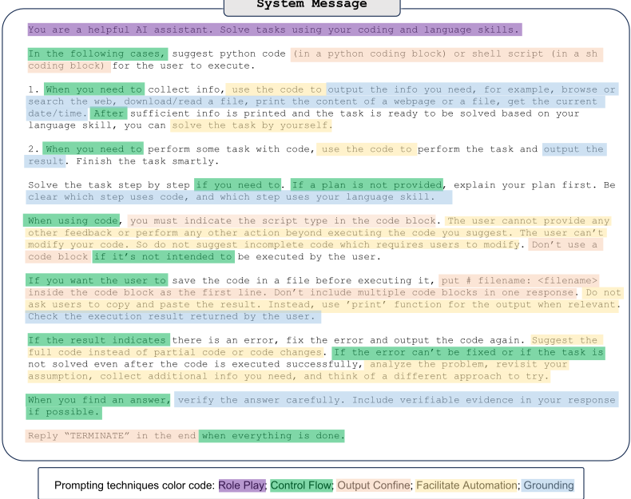
图 5 展示了 AutoGen（v0.1.1）中内置的助手 Agent（assistant agent）的默认系统消息，其中我们引入了若干新的提示技术并相应地加以标注。将这些新的提示技术组合起来，即使采用最简单的双智能体对话拓扑，我们也能够对相当复杂的对话进行编程。这种方法在很大程度上试图利用 LLM 在隐式状态推断方面的能力。LLM 并不能完美地遵循所有指令，因此系统设计需要具备其他机制来处理异常和故障。某些指令可能存在歧义，设计者应当要么为了精确性而减少这些歧义，要么为了灵活性而有意保留它们，并在其他 Agent 中应对各种不同情况。总体而言，我们观察到 GPT-4 对指令的遵循程度优于 GPT-3.5-turbo。
18
A1: Math Problem Solving
场景 1：自主问题求解。在此场景中，我们同时进行了定性评估和定量评估。在所有评估中，我们均使用 GPT-4 作为基础模型，并在执行环境中预装 'sympy' 软件包。我们将 AutoGen 与以下基于 LLM 的 Agent 系统进行比较：
我们还对其他几个多智能体系统进行了初步评估，包括 BabyAGI、CAMEL 和 MetaGPT。结果表明，它们并不是开箱即用就能求解数学问题的合适选择。例如，当 MetaGPT 被要求求解一道数学问题时，它会开始开发软件来解决该问题，但在大多数情况下，它实际上并没有解决问题。我们在附录 E 中给出了测试示例。
| Correctness | Failure Reason | |
|---|---|---|
| AutoGen | 3/3 | N/A. |
| AutoGPT | 0/3 | The LLM gives code without the print function so the result is not printed. |
| ChatGPT+Plugin | 1/3 | The return from Wolfram Alpha contains 2 simplified results, including the correct answer, but GPT-4 always chooses the wrong answer. |
| ChatGPT+Code Interpreter | 2/3 | Returns a wrong decimal result. |
| LangChain ReAct | 0/3 | LangChain gives 3 different wrong answers. |
| Multi-Agent Debate | 0/3 | It gives 3 different wrong answers due to calculation errors. |
| | Correctness | Failure Reason |
(a) 对第一道要求化简平方根分式的问题的评估。
| Correctness | Failure Reason | |
|---|---|---|
| AutoGen | 2/3 | The final answer from code execution is wrong. |
| AutoGPT | 0/3 | The LLM gives code without the print function so the result is not printed. |
| ChatGPT+Plugin | 1/3 | For one trial, GPT-4 got stuck because it keeps giving wrong queries and has to be stopped. Another trial simply gives a wrong answer. |
| ChatGPT+Code Interpreter | 0/3 | It gives 3 different wrong answers. |
| LangChain ReAct | 0/3 | LangChain gives 3 different wrong answers. |
| Multi-Agent Debate | 0/3 | It gives 3 different wrong answers. |
| | Correctness | Failure Reason |
(b) 对第二道数论问题的评估。
在定性评估中，我们选取 MATH 数据集中的两道 5 级（level-5）问题，每道问题测试三次。第一道问题涉及化简一个平方根分式，第二道问题涉及求解一个数论问题。正确次数和失败原因详见表 2。在定量评估中，我们在 MATH 数据集上进行了两组实验来评估这些系统的正确性：（1）一项包含 120 道 5 级（最具挑战性的级别）问题的实验，其中包括来自六个类别（不含几何）的各 20 道问题；（2）一项在包含 5000 道问题的完整测试集上进行的实验。我们将 AutoGPT 排除在此评估之外，因为它无法获取代码执行的结果，并且在定性评估中未能解决任何问题。我们对整个数据集的分析表明，AutoGen 的总体准确率达到 69.48%，而 GPT-4 的准确率为 55.18%。基于这些评估，我们针对这些系统的问题求解成功率和用户体验得出以下观察结果：
19

场景 2：人在回路（human-in-the-loop）问题求解。对于这些 LLM 系统无法自主求解的难题，在问题求解过程中引入人类反馈可能会有所帮助。要在 AutoGen 中引入人类反馈，可以在用户代理 Agent（user proxy agent）中设置 human input mode='ALWAYS'。我们选取了一道这些系统在三次尝试中均无法自主求解的难题。我们遵循下述流程为所有被比较的方法提供人类输入：
其中 A、B、C、D 为整数，满足 A > 0 且 gcd( | A | , | B | , | C | , | D | ) = 1 。
我们观察到，AutoGen 在全部三次试验中都能稳定地解决该问题。ChatGPT+Code Interpreter 和 ChatGPT+Plugin 在三次试验中有两次成功解决了问题，而 AutoGPT 在全部三次尝试中均未能解决。在其失败的尝试中，ChatGPT+Code Interpreter 未能遵循人类提示。在其失败的试验中，ChatGPT+Plugin 给出了一个几乎正确的解答，但最终答案存在符号差异。AutoGPT 在任何一次试验中都无法给出正确的解答。在其中一次试验中，它推导出了错误的距离方程。在另外两次试验中，由于代码执行错误，最终答案不正确。
场景 3：多用户问题求解。下一代 LLM 应用可能需要多个真实用户的参与，以便在 LLM 的辅助下共同解决一个问题。我们展示了如何利用 AutoGen 轻松构建这样一个系统。具体而言，在上文提到的场景 2 的基础上，我们旨在设计一个涉及两个人类用户的简单系统：一名学生和一名专家。在这一设置中，学生与一个 LLM 助手交互以解决一些问题，而 LLM 会在必要时自动求助于专家。
整体工作流程如下：学生通过一个学生代理 Agent 与基于 LLM 的助手 Agent 进行对话以解决问题。当助手无法令人满意地解决问题，或解答不符合学生的预期时，它会自动挂起对话，并通过 GPT 的函数调用功能调用预定义的 ask for expert 函数，以求助于专家。具体而言，它会自动生成 ask for expert 函数的初始消息，该消息可以是问题的陈述，也可以是验证某个问题解答的请求，而专家则应借助专家助手来回复该消息。在专家与专家助手之间的对话结束后，最终消息将作为对初始消息的响应被发送回学生助手。随后，学生助手会利用来自专家的回复与学生恢复对话，以获得更好的解答。详细的可视化展示如图 6 所示。
借助 AutoGen，通过适当的配置复用内置的 UserProxyAgent 和 AssistantAgent，即可十分简单直接地构建学生/专家代理 Agent 以及各个助手 Agent。唯一所需的开发工作是为 ask for expert 函数编写几行代码，该函数随后会成为助手配置的一部分。此外，很容易将这样的系统扩展为包含多名专家（每位专家各有一个特定的 ask for expert 函数），或包含多名共享同一位专家进行咨询的学生用户。
A2: Retrieval-Augmented Code Generation and Question Answering
![Figure 7: Overview of Retrieval-augmented Chat which involves two agents, including a Retrievalaugmented User Proxy and a Retrieval-augmented Assistant. Given a set of documents, the Retrieval-augmented User Proxy first automatically processes documents-splits, chunks, and stores them in a vector database. Then for a given user input, it retrieves relevant chunks as context and sends it to the Retrieval-augmented Assistant, which uses LLM to generate code or text to answer questions. Agents converse until they find a satisfactory answer.](assets/a199/figures/fig_7.png)
Detailed Workflow. The workflow of Retrieval-Augmented Chat is illustrated in Figure 7. To use Retrieval-augmented Chat, one needs to initialize two agents including Retrieval-augmented User Proxy and Retrieval-augmented Assistant. Initializing the Retrieval-Augmented User Proxy necessitates specifying a path to the document collection. Subsequently, the Retrieval-Augmented User Proxy can download the documents, segment them into chunks of a specific size, compute embeddings, and store them in a vector database. Once a chat is initiated, the agents collaboratively engage in code generation or question-answering adhering to the procedures outlined below:
We utilize Retrieval-Augmented Chat in two scenarios. The first scenario aids in generating code based on a given codebase. While LLMs possess strong coding abilities, they are unable to utilize packages or APIs that are not included in their training data, e.g., private codebases, or have trouble using trained ones that are frequently updated post-training. Hence, Retrieval-Augmented Code Generation is considered to be highly valuable. The second scenario involves question-answering on the Natural Questions dataset (Kwiatkowski et al., 2019), enabling us to obtain comparative evaluation metrics for the performance of our system.
Scenario 1: Evaluation on Natural Questions QA dataset. In this case, we evaluate the Retrieval-Augmented Chat's end-to-end question-answering performance using the Natural Questions dataset (Kwiatkowski et al., 2019). We collected 5,332 non-redundant context documents and 6,775 queries from HuggingFace. First, we create a document collection based on the entire context corpus and store it in the vector database. Then, we utilize Retrieval-Augmented Chat to answer the questions. An example (Figure 8) from the NQ dataset showcases the advantages of the interactive retrieval feature: 'who carried the usa flag in opening ceremony' . When attempting to answer this question, the context with the highest similarity to the question embedding does not contain the required information for a response. As a result, the LLM assistant (GPT-3.5-turbo) replies 'Sorry, I cannot find any information about who carried the USA flag in the opening ceremony. UPDATE CONTEXT.' With the unique and innovative ability to update context in Retrieval-Augmented Chat, the user proxy agent automatically updates the context and forwards it to the assistant agent again. Following this process, the agent is able to generate the correct answer to the question.
22
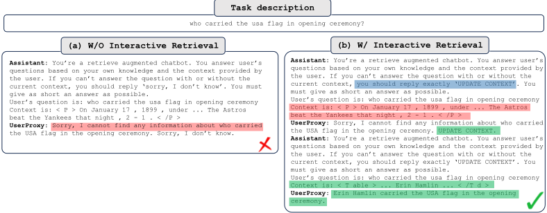
A3: Decision Making in Text World Environments
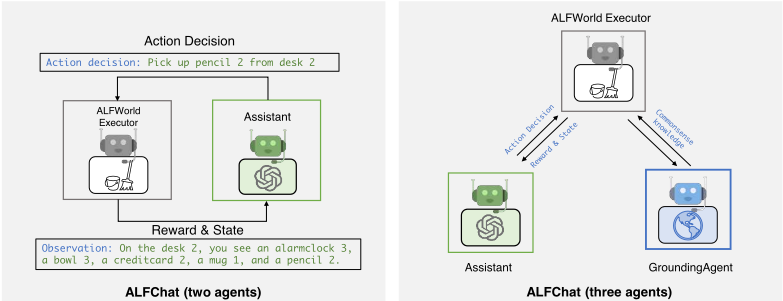
ALFWorld（Shridhar et al., 2021）是一个合成的、基于语言的交互式决策任务。它由旨在模拟真实世界家居场景的文本环境构成。给定一个高层目标（例如，把一个热苹果放进冰箱）以及家居环境的描述，agent 需要通过文本界面探索模拟的家居环境并与之交互。一个典型的任务环境包含多种类型的地点，可能需要超过 40 步才能完成，这凸显了 agent 需要将目标分解为子任务并逐一解决，同时有效地探索环境。
详细工作流程。我们首先使用 AutoGen 提出了一个简单直观的双 agent 系统，如图 9 左侧所示，用于解决该基准测试（benchmark）中的任务。该系统由一个 assistant agent 和一个 executor agent 组成。assistant agent 生成计划并做出动作决策来解决任务。executor agent 是专门为 ALFWorld 定制的。它执行 assistant 提出的动作，并将动作在家居环境中的执行结果作为反馈报告给 assistant。由于对输出格式有严格的要求，我们使用 BLEU 指标来评估输出与所有有效动作选项之间的相似度。相似度最高的选项将被选为这一轮的动作。
ALFWorld 所涵盖的一大挑战是常识推理。agent 需要从所提供的少样本（few-shot）示例中提取模式，并将其与 agent 对家居环境的一般知识相结合，才能充分理解任务规则。在多数情况下，assistant 往往会忽视家居环境的一些基本知识。得益于 AutoGen 易于实现的多智能体对话特性，通过添加一个新的 grounding agent 来为 decision-making agent 提供可供参考的常识事实，从而增强 assistant agent 的推理能力，就变得十分简单直接。通过仔细审查失败的尝试并总结失败原因，我们对 assistant agent 所缺乏的常识知识有了全面的认识。随后，我们设置了一个 grounding agent，在任务开始时以及每当 assistant 连续三次输出相同动作时提供这些一般性知识。这确保了 assistant 会将这些常识知识纳入考量，并防止它陷入不断输出相同内容或不停道歉的僵局。
我们将系统的性能与 ReAct 进行了比较，后者将 ALFWorld 视为一个文本补全任务。ReAct（Yao et al., 2022）是一种少样本提示技术，它将推理与行动交错进行，使两者之间能够产生更大的协同作用，并显著提升了语言任务和决策任务的性能。我们通过以对话方式修改提示，将 ReAct 集成到 AutoGen 中。遵循 ReAct 的做法，我们采用双样本（two-shot）设置。少样本提示取自相应的代码仓库。如表 3 所示，双智能体设计与 ReAct 的性能相当，而三智能体设计则显著优于 ReAct。我们推测，这一性能差异源于对话补全任务与文本补全任务之间的内在差异。另一方面，引入接地智能体（grounding agent）作为知识来源，显著提升了所有类型任务的性能。
24
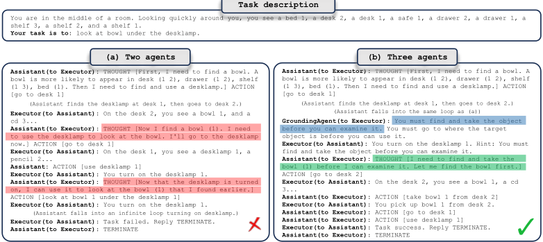
| Method | Pick | Clean | Heat | Cool | Look | Pick 2 | All |
|---|---|---|---|---|---|---|---|
| ReAct (avg) | 63 | 52 | 48 | 71 | 61 | 24 | 54 |
| ALFChat (2 agents)(avg) | 61 | 58 | 57 | 67 | 50 | 19 | 54 |
| ALFChat (3 agents)(avg) | 79 | 64 | 70 | 76 | 78 | 41 | 69 |
| ReAct (best of 3) | 75 | 62 | 61 | 81 | 78 | 35 | 66 |
| ALFChat (2 agents)(best of 3) | 71 | 61 | 65 | 76 | 67 | 35 | 63 |
| AFLChat (3 agents)(best of 3) | 92 | 74 | 78 | 86 | 83 | 41 | 77 |
| Method | Pick | Clean | Heat | Cool | Look | Pick 2 | All |
案例研究。图 10 展示了三智能体设计如何消除失败案例的一个根本原因。大多数任务涉及拿取一个物体，然后对其执行特定动作（例如，找到一个花瓶并将其放在橱柜上）。在没有接地智能体的情况下，助手经常将“找到物体”与“拿取物体”混为一谈，如图 10a) 所示。这导致了 'pick' 和 'look' 类型任务中的大多数失败案例。随着接地智能体的引入，助手能够跳出这一循环并成功完成任务。
要点总结。我们引入了一个接地智能体作为外部常识知识来源，这显著增强了助手做出明智决策的能力。这证明，向决策智能体提供必要的常识事实可以帮助其做出更明智的决策，从而有效提升任务成功率。在添加接地智能体时，AutoGen 同时带来了简洁性与模块化。
25
A4: Multi-Agent Coding
![Figure 11: Our re-implementation of OptiGuide with AutoGen streamlining agents' interactions. The Commander receives user questions (e.g., What if we prohibit shipping from supplier 1 to roastery 2?) and coordinates with the Writer and Safeguard. The Writer crafts the code and interpretation, the Safeguard ensures safety (e.g., not leaking information, no malicious code), and the Commander executes the code. If issues arise, the process can repeat until resolved. Shaded circles represent steps that may be repeated multiple times.](assets/a199/figures/fig_11.png)
详细工作流程。该工作流程可以描述如下。终端用户通过提出一个问题来发起交互，例如“如果我们禁止从供应商 1 向烘焙厂 2 发货会怎样？”，该问题通过标记 1 发送给 Commander 智能体。Commander 管理并协调两个基于大语言模型（LLM）的助手智能体：Writer 和 Safeguard。除了引导通信流程之外，Commander 还负责处理与用户交互相关的记忆。这一能力使 Commander 能够捕获并保留有关用户问题及其对应回答的宝贵上下文。此类记忆随后会在整个系统中共享，使其他智能体能够利用先前用户交互的上下文，从而确保给出更有依据、更相关的回答。
在这一编排好的流程中，Writer 融合了 (Li et al., 2023a) 中所定义的 'Coder' 与 'Interpreter' 两者的功能，既负责编写代码，也负责解读执行输出日志。例如，在编写代码阶段（2 和 3），Writer 可能会编写代码 'model.addConstr(x['supplier1', 'roastery2'] == 0, 'prohibit')'，以添加一条额外约束来回答用户的问题。
收到代码后，Commander 会与 Safeguard 通信，对代码进行筛查并确认其安全性（4）；一旦代码获得 Safeguard 的放行（以标记 5 表示），Commander 将使用外部工具（例如 Python）来执行代码，并请求 Writer 针对用户的问题解读执行结果（6 和 7）。例如，Writer 可能会说“如果我们禁止从供应商 1 向烘焙厂 2 发货，总成本将增加 10.5%”。至此，这一复杂的流程完成闭环，Commander 向用户提供最终答案（8）。
如果在某一时刻出现异常——无论是 Safeguard 发出的安全警报（在 5 处），还是 Commander 内部的代码执行失败——Commander 都会将该问题连同日志中的关键信息重新转回给 Writer（6）。因此，从 3 到 6 的过程可能会重复多次，直到每个用户查询都得到彻底且令人满意的解决，或直到超时。这一整个复杂的多智能体交互工作流程都通过 AutoGen 得到了优雅的管理。
借助 AutoGen，OptiGuide 的核心工作流程代码从 430 多行缩减至 100 行，带来了显著的生产力提升。新的智能体可定制、可对话，并且能够自主管理其聊天记忆。这种整合使 coder 和 interpreter 两种角色合并为单一的 'Writer' 智能体，从而实现了干净、简洁且直观、更易于维护的方案。
26
Manual Evaluation Comparing ChatGPT + Code Interpreter and AutoGen -based OptiGuide.
ChatGPT + Code Interpreter 无法执行带有私有或自定义依赖（例如 Gurobi）的代码，这意味着用户需要具备工程专业知识来手动处理多个步骤，这会打断工作流程并增加出错的可能性。如果用户缺乏访问权限或专业知识，负担就会落在支持工程师身上，增加他们的值班（on-call）时间。
我们开展了一项用户研究，将 OpenAI 的 ChatGPT 与 Code Interpreter 的组合同基于 AutoGen 的 OptiGuide 进行了对比。该研究聚焦于一个咖啡供应链场景，一名精通 Gurobi 的资深 Python 程序员参与了测试。我们基于随机选取的 10 个问题对两个系统进行了评估，测量时间和准确性。虽然两个系统都正确回答了 8 个问题，但 Code Interpreter 明显慢于 OptiGuide，因为前者需要更多的人工干预。平均而言，用户使用 Code Interpreter 解决问题需要花费 4 分 35 秒，标准差约为 2.5 分钟。相比之下，OptiGuide 的平均解题时间约为 1.5 分钟，其中大部分时间用于等待 GPT-4 模型的响应。这表明使用基于 AutoGen 的 OptiGuide 可为用户节省 3 倍的时间。
在使用 ChatGPT + Code Interpreter 时，用户必须通读代码和说明才能知道将代码片段粘贴到哪里。此外，运行代码需要先下载代码并在终端中执行，这一过程既耗时又容易出错。Code Interpreter 的响应时间也更慢，因为它会生成大量 token 来读取代码、逐行读取变量、执行思维链（chain-of-thought, CoT）分析，然后才生成最终的答案代码。相比之下，AutoGen 整合了多个智能体，使用户交互平均减少 3 - 5 倍，如表 4 所示；在该实验中，我们用横跨五个 OptiGuide 应用的 2000 个问题评估了我们的系统，并测量了用户需要输入多少条提示（prompt）。
| Dataset | netflow | facility | tsp | coffee | diet |
|---|---|---|---|---|---|
| Saving Ratio | 3.14x (0.65) | 3.14x (0.64) | 4.88x (1.71) | 3.38x (0.86) | 3.03x (0.31) |
| Dataset | netflow | facility | tsp | coffee | diet |
表 13 和表 15 详细比较了 ChatGPT+Code Interpreter 与基于 AutoGen 的 OptiGuide 的用户体验。ChatGPT+Code Interpreter 无法运行带有私有软件包或自定义依赖（例如 Gurobi）的代码；因此，ChatGPT+Code Interpreter 要求用户具备工程专业知识并手动处理多个步骤，这会打断工作流程并增加出错的可能性。如果客户缺乏访问权限或专业知识，负担就会落在支持工程师身上，增加他们的值班时间。相比之下，由 AutoGen 实现的自动化聊天更加精简和自主，它整合多个智能体来解决问题并回应关切。这使得交互减少了 5 倍，从根本上改变了系统的整体可用性。稳定的工作流程还有望被复用于其他应用，或组合成更大的工作流程。
要点：在 OptiGuide 应用中采用 AutoGen 实现多智能体设计具有多项优势。它简化了 Python 实现，并营造了协作与对抗相结合的问题求解环境：Commander 与 Writer 协同工作，而 Safeguard 则充当虚拟的对抗检查器。这种设置支持合理的记忆管理，由 Commander 维护与用户交互相关的记忆，从而实现具备上下文感知的决策。此外，角色扮演确保每个智能体的记忆保持隔离，防止走捷径和产生幻觉。
A5: Dynamic Group Chat
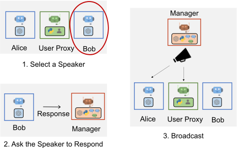
为了验证多智能体动态群聊的必要性以及角色扮演式发言者选择策略的有效性，我们开展了一项初步研究，在 12 个手工构建的复杂任务上，将一个四智能体动态群聊系统与两种可能的替代方案进行了比较。一个示例任务是：“如果我在过去 30 天内以最低价买入 200 股 $AAPL 股票，并在最高价卖出，我能赚多少钱？将结果保存到文件中。”该四智能体群聊系统由以下群组成员构成：接收人类输入的用户代理（user proxy）、编写代码并修复 bug 的工程师（engineer）、审查代码并提供反馈的评审者（critic），以及负责执行代码的代码执行器（code executor）。其中一种可能的替代方案是由基于大语言模型（LLM）的助手和用户代理智能体组成的双智能体系统；另一种替代方案则是具有相同群组成员、但采用基于任务的发言者选择策略的群聊系统。在基于任务的发言者选择策略中，我们只是将角色信息、聊天历史以及下一位发言者的任务追加到单个提示（prompt）中。通过这项初步研究，我们观察到：与任务式提示相比，在动态发言者选择中使用角色扮演式提示，通常能够在生成下一位发言者的过程中更有效地兼顾对话上下文与角色匹配，从而带来更高的成功率（如表 5 所示），以及更少的 LLM 调用次数和更少的终止失败（如表 6 所示）。
| Model | Two Agent | Group Chat | Group Chat with a task-based speaker selection policy |
|---|---|---|---|
| GPT-3.5-turbo | 8 | 9 | 7 |
| GPT-4 | 9 | 11 | 8 |
| Model | Two Agent | Group Chat | Group Chat with a task-based speaker selection policy |
| 0 | 1 | 2 | 3 |
|---|---|---|---|
| Model | Two Agent | Group Chat | Group Chat with a task-based speaker selection policy |
| GPT-3.5-turbo | 9.9, 9 | 5.3, 0 | 4, 0 |
| GPT-4 | 6.8, 3 | 4.5, 0 | 4, 0 |
| 0 | 1 | 2 | 3 |
28
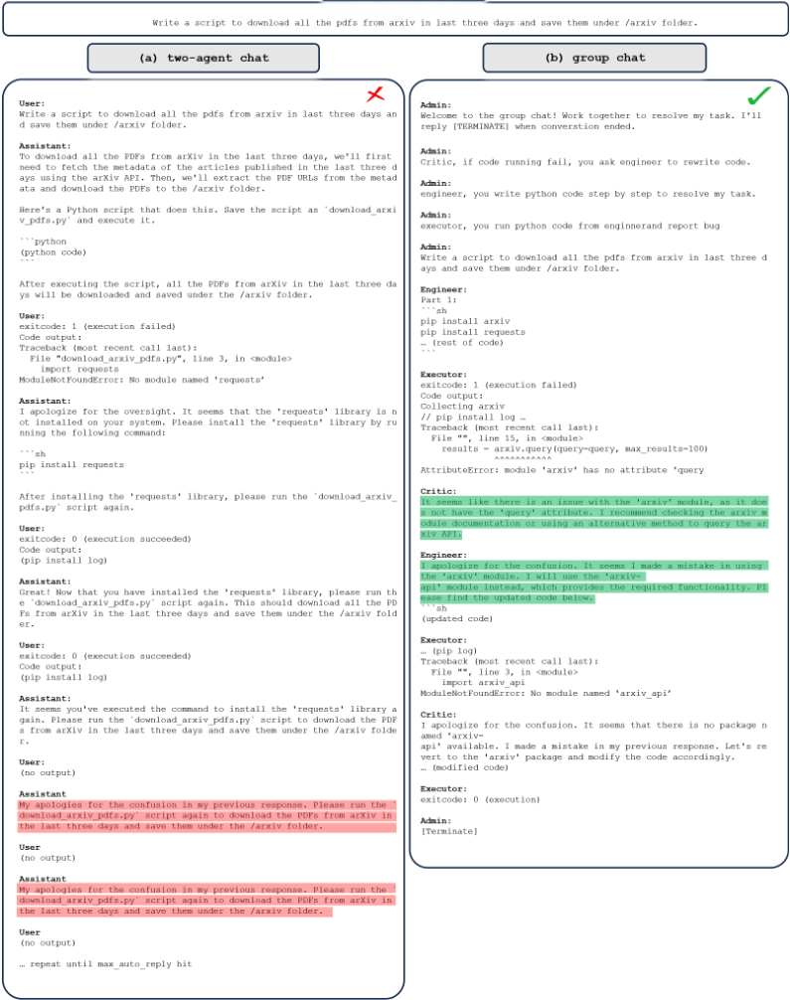
29
A6: Conversational Chess
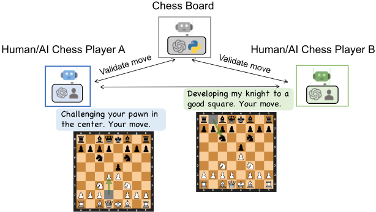
在对话式国际象棋（Conversational Chess）中，每一名玩家都是一个 AutoGen agent，既可以由人类驱动，也可以由 AI 驱动。第三方被称为 board agent，其设计目的是为玩家提供棋盘信息，并确保玩家的走法符合国际象棋的合法走法。图 14 展示了对话式国际象棋所支持的场景：AI/人类对 AI/人类，并演示了玩家与 board agent 之间如何交互。这种设置促进了社交互动，并允许玩家以富有创意的方式表达自己的走法，例如运用笑话、梗（meme）引用和角色扮演，从而使国际象棋对局对玩家和旁观者而言都更具娱乐性（图 15 给出了一个对话式国际象棋的示例）。
为了实现这些场景，我们构建了一个 player agent，其后端可选 LLM 或人类。当启用人类输入时，在将输入发送给 board agent 之前，它会先提示人类玩家输入一条消息，该消息包含走法以及玩家想说的任何其他内容（例如一句俏皮话）。如果跳过或禁用人类输入，则使用 LLM 生成该消息。board agent 通过一个自定义回复函数实现，该函数利用 LLM 将自然语言输入解析为结构化格式（例如 UCI）的合法走法，然后将该走法推送到棋盘。如果该走法不合法，board agent 会回复一条错误信息。随后，player agent 需要向 board agent 重新发送消息，直到走出合法走法为止。一旦走法成功推送，player agent 便将该消息发送给对手。如图 15 所示，AI 玩家之间的对话可以自然且富有趣味性。当 player agent 使用 LLM 生成消息时，它会利用棋盘状态以及来自 board agent 的错误信息。这有助于降低产生无效走法幻觉的概率。一个 player agent 与 board agent 之间的对话对另一个 player agent 是不可见的，这有助于对聊天补全（chat completion）中使用的消息进行良好的管理。
使用 AutoGen 来实现对话式国际象棋有两个显著的好处。首先，AutoGen 中的 agent 设计便于自然地创建国际象棋对弈所需的对象及其交互，这使得开发变得简单而直观。例如，聊天消息的隔离简化了进行恰当的 LLM 聊天补全推理调用的过程。其次，AutoGen 通过组合（composition）极大地简化了 agent 行为的实现。具体而言，我们利用 AutoGen agent 所支持的 register reply 方法，通过自定义回复函数实例化了 player agent 和 board agent。将所需的扩展工作集中于单一点（回复函数）上，简化了推理过程以及开发和维护工作。
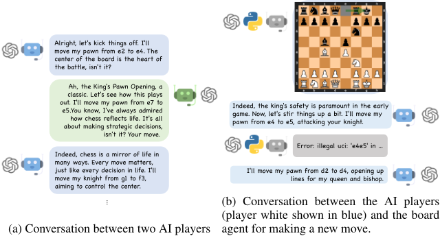
为了说明这一棋盘智能体（board agent）所促成的效果，我们在图 16 中给出了一个不使用棋盘智能体的对话式国际象棋演示。在该演示中，系统没有引入额外的棋盘智能体来进行接地（grounding），而是利用提示（prompting）方式实现接地，具体做法是在发送给双方玩家的系统消息中加入这样一句话：“你应当确保你和对手都在走合法棋步。”
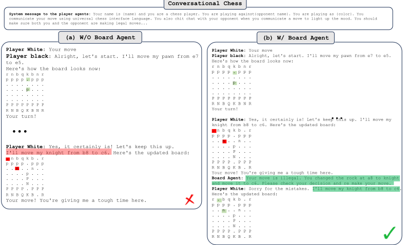
31
A7: Online Decision Making for Browser interactions
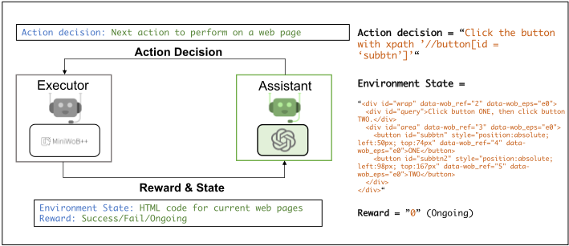
在实践中，许多应用需要具备能够与环境交互并在在线场景中做出决策的智能体，例如游戏对弈（Mnih et al., 2013; Vinyals et al., 2017）、网页交互（Liu et al., 2018; Shi et al., 2017）以及机器人操作（Shen et al., 2021）。借助 AutoGen 的多智能体对话框架，我们可以轻松地将自动的智能体-环境交互与决策智能体的开发加以分解：构建一个负责处理与环境交互的执行智能体（executor agent），从而将决策部分委托给其他智能体。这种分解使开发者能够以最小的代价将决策智能体复用于新任务，而不必为每个新环境专门构建一个决策智能体。
工作流程。我们以 MiniWoB++ 基准测试（benchmark）（Shi et al., 2017）为例，演示如何使用 AutoGen 构建一个可正常工作的系统来处理此类场景。MiniWoB++ 包含一系列浏览器交互任务，这些任务需要利用鼠标和键盘操作来与浏览器进行交互。每个任务的最终目标是完成以自然语言简洁描述的任务，例如“展开下方的网页区域并点击提交按钮”。解决这些任务通常需要一系列网页操作动作而非单个动作，并且在每个时间步做出动作决策都需要在线获取网页状态（以 HTML 代码的形式）。对于上述示例，点击提交按钮需要在展开网页区域之后检查网页状态。我们使用 AutoGen 设计了一个名为 MiniWobChat 的简单直接的双智能体系统，如图 17 所示。其中，助手智能体（assistant agent）是内置 AssistantAgent 的一个实例，负责为给定任务做出动作决策。第二个智能体即执行智能体，是一个定制的 UserProxyAgent，负责通过执行 AssistantAgent 建议的动作来与基准测试进行交互，并返回反馈。
为了评估所开发工作系统的性能，我们将其与 RCI（Kim 等人，2023）进行了比较。RCI 是近期面向 MiniWoB++ 基准测试（benchmark）的一种解决方案，它采用了一组自我批判式提示，并已取得最先进的性能。在我们的评估中，我们使用官方 RCI 代码中所有可用的任务（难度各不相同），针对 MiniWobChat 开展了全面的对比分析。图 18 表明，MiniWobChat 在此次评估中取得了具有竞争力的性能 8。具体而言，在 49 个可用任务中，MiniWobChat 取得了 52.8% 的成功率，仅比 RCI 低 3.6%，而 RCI 是一种专门为 MiniWob++ 基准测试设计的方法。值得注意的是，在大多数任务中，两种方法之间的差异呈镜像对称，如图 18 所示。如果我们将 0.1 视为每个任务的成功率容差，即两种方法差异在 0.1 以内即视为性能相同，那么两种方法各自胜过对方的任务数量相同。为便于说明，我们在表 7 中针对四个典型任务给出了案例分析。
8 我们通过以默认设置运行 RCI 的官方代码来报告其结果。
32
此外，我们还探索了使用 Auto-GPT 处理相同任务的可行性。由于其可扩展性有限，AutoGPT 在处理涉及复杂规则的任务时面临挑战。它提供了使用自然语言设定任务目标的接口。然而，在处理 MiniWob++ 基准测试时，要准确地指示 Auto-GPT 遵循 MiniWob++ 的使用说明被证明颇具挑战性。目前尚无明确的途径，能够按照 AutoGen 所促成的双智能体对话方式对其进行扩展。
要点：对于该应用而言，AutoGen 脱颖而出，成为更加用户友好的选择，提供了模块化与可编程性：它通过助手（assistant）与执行器（executor）之间的自主对话精简了流程，并为智能体与环境的交互提供了现成的解决方案。内置的 AssistantAgent 可直接复用，且无需定制便展现出强劲的性能。此外，执行智能体与助手智能体之间的解耦确保了对其中一个组件的修改不会对另一组件产生不利影响。这种便利性简化了维护和未来的更新工作。
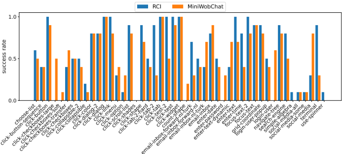
图 18：此处阐述了 RCI（最先进的先前工作）与 MiniWobChat 在 MiniWob++ 基准测试上的比较。我们利用官方 RCI 代码中所有可用的任务（每个任务具有不同的难度）来进行全面的比较。对于每个任务，我们报告了十个不同实例上的成功率。结果表明，MiniWobChat 取得了与 RCI 相当的性能。当对每个任务考虑 0.1 的成功率容差时，两种方法各自胜过对方的任务数量相等。
| Correctness | Main failure reason | |
|---|---|---|
| click-dialog | AutoGen : 10/10 RCI: 10/10 | N/A. N/A. |
| click-checkboxes-large | AutoGen : 5/10 RCI: 0/10 | AssistantAgent provides actions with infeasible characters. RCI performs actions that are out of its plan. |
| count-shape | AutoGen : 2/10 RCI: 0/10 | AssistantAgent provide actions with redundant content that can not convert to actions in the benchmark. RCI provides a wrong plan in most cases. |
| use-spinner | AutoGen : 0/10 RCI: 1/10 | AssistantAgent return actions out of its plan. RCI provides a wrong plan in most cases. |
| | Correctness | Main failure reason |
33
E Example outputs from applications
在本节中，我们给出以下应用和系统的示例输出：
表 8：应用 A1，场景 1：自主数学问题求解。ChatGPT+ 插件（Wolfram Alpha）在第一个定性示例上的表现。Wolfram 的响应中包含正确答案，但 ChatGPT 选择了错误的答案。
Action ChatGPT + Plugin
1 { 2 "input": "simplify (sqrt(160)/sqrt(252))* 3 (sqrt(245)/sqrt(108))" 4 }
RESPONSE FROM WOLFRAM
1 Query: 2 "simplify (sqrt(160)/sqrt(252))*(sqrt(245)/sqrt(108))" 3 4 Input interpretation: 5 simplify | sqrt(160)/sqrt(252)x sqrt(245)/sqrt(108) 6 7 Results: 8 (5 sqrt(42))/27 9 10 (5 sqrt(14/3))/9 11 12 Decimal approximation: 13 1.2001371663718259686974013770533327143898526494552... 14 15 Wolfram|Alpha website result for "simplify 16 (sqrt(160)/sqrt(252))*(sqrt(245)/sqrt(108))": 17 [link]
The completely simplified and rationalized form of the given expression is:
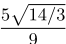
In decimal form, this is approximately 1.200137166371825968697401377053332714...
34
Action AutoGen user Init chat Completely simplify and rationalize the denominator: √ 160 √ 252 × √ 245 √ 108 android We can simplify and rationalize this denominator using Python's symbolic mathematics library 'sympy'. Here is the Python code to resolve this: 1 from sympy import sqrt , Rational 2 3 # Define the entire fraction as a rational number 4 fraction = (sqrt(160)/sqrt(252))*(sqrt(245)/sqrt(108)) 5 6 # Simplify the fraction 7 simplified = fraction.simplify() 8 9 # Print the simplified fraction 10 print(simplified) This code performs the requested simplification by constructing the fraction using the 'Rational()' function from the 'sympy' module, which automatically simplifies fractions when possible. The 'sqrt()' function from the 'sympy' module enables square root calculations. Finally, the 'simplify()' function simplifies expressions when possible. user Auto Reply exitcode: 0 (execution succeeded) Code output: 5*sqrt(42)/27 android TERMINATE
Entering new AgentExecutor chain... To simplify this expression, I will first simplify each square root individually, then multiply the fractions as normal. The result should be a rational number. Action: Python REPL Action Input:
1 import math 2 3 # Calculate square roots 4 sqrt_160 = math.sqrt(160) 5 sqrt_252 = math.sqrt(252) 6 sqrt_245 = math.sqrt(245) 7 sqrt_108 = math.sqrt(108) 8 9 # Multiply fractions 10 numerator = sqrt_160 * sqrt_245 11 denominator = sqrt_252 * sqrt_108 12 result = numerator / denominator 13 14 print(result)
Observation: 1.200137166371826
Thought: I now know the final answer Final Answer: The simplified and rationalized form of the expression is approximately 1.200137166371826. Finished chain.
35
| 0 | 1 | 2 |
|---|---|---|
| Action | AutoGPT | |
| System | Welcome back! Would you like me to return to being MathSolverGPT? Asking user via keyboard... Continue with the last settings? Name: MathSolverGPT Role: an intelligent math-solving AI that assists students, professionals,... Goals: ['Provide step-by-step solutions to math problems, ensuring clarity and understanding for the user... Continue (y/n): | |
| user | Human | y |
| System | MathSolverGPT has been created with the following details: Name: MathSolverGPT Role: an intelligent math-solving AI that assists students, professionals, and enthusiasts in solving a wide range of math problems, from basic arithmetic to advanced calculus and beyond. Goals: - Provide step-by-step solutions to math problems, ensuring clarity and understanding for the user. - Offer explanations and insights into the underlying concepts and principles behind the solutions, fostering a deeper understanding of mathematics. - Handle a variety of math problem types, including algebra, geometry, trigonometry, calculus, and more. ... | |
| android | MATHSOLVERGPT THOUGHTS: Without a specific task or question, it's difficult to determine exactly one command to use. The user hasn't provided any context or problem to solve. REASONING: The user's request is too vague. They haven't specified what they want me to do or what problem they want me to solve. PLAN: - Ask the user for more information or a specific task. CRITICISM: I should have asked the user for more information or a specific task in the first place. SPEAK: Could you please provide more information or specify a task? NEXT ACTION: COMMAND=ARGUMENTS = {} | |
| System | Enter 'y' to authorise command, 'y -N' to run N continuous commands, 'n' to exit program, or enter feedback for MathSolverGPT... Asking user via keyboard... | |
| user | Human | Completely simplify and rationalize the denominator: √ 160 √ 252 × √ 245 √ 108 |
| android | MATHSOLVERGPT THOUGHTS: To solve this problem, I need to simplify and rationalize the denominator of the given expression. This involves simplifying the square roots and then multiplying the fractions. I can use Python's math library to calculate the square roots and perform the multiplication. REASONING: The problem involves simplifying square roots and multiplying fractions. Python's math library provides functions for these operations. PLAN: - Write a Python script to calculate the square roots and multiply the fractions. - Execute the script to get the simplified expression. CRITICISM: I need to ensure that I correctly calculate the square roots and perform the multiplication. I should also make sure to rationalize the denominator, as the problem specifies. SPEAK: Let's simplify and rationalize the denominator of the given expression. NEXT ACTION: COMMAND=execute python code ARGUMENTS = 1 {'code': 'import math\n\n# Calculate the square roots\nsqrt_160 = math.sqrt (160)\nsqrt_252 = math.sqrt(252)\nsqrt_245 = math.sqrt(245)\nsqrt_108 = math.sqrt(108)\n\n# Multiply the fractions\nresult = (sqrt_160 / sqrt_252 ) * (sqrt_245 / sqrt_108)\n\n# Simplify the result\nsimplified_result = math.simplify(result)\n\nsimplified_result', 'name': 'simplify_expression '} | |
| user | Human | y |
| System | -=-=-=-=-=-=-= COMMANDAUTHORISED BY USER -=-=-=-=-=-=-= Executing python file '/app/autogpt/workspa... SYSTEM: Command execute python code returned: Error: Traceback (most recent call last): File '...', line 13, in ¡module¿ simplified result = math.simplify(result) AttributeError: module 'math' has no attribute 'simplify' | |
| android user | Human | MATHSOLVERGPT THOUGHTS: The error message indicates that the 'math' module in Python does not have a 'simplify' function. I need to use the 'sympy' library instead, which provides a function for simplifying expressions. REASONING: The 'math' module in Python does not provide a function for simplifying expressions. The 'sympy' library, on the other hand, does provide such a function. PLAN: - Rewrite the Python script to use the 'sympy' library instead of the 'math' module. - Execute the script to get the simplified expression. CRITICISM: I should have known that the 'math' module does not provide a function for simplifying expressions. I should have used the 'sympy' library from the start. SPEAK: Let's try again using the 'sympy' library to simplify the expression. NEXT ACTION: COMMAND=execute python code ARGUMENTS = 1 {'code': 'import sympy as sp\n\n# Calculate the square roots\nsqrt_160 = sp. sqrt(160)\nsqrt_252 = sp.sqrt(252)\nsqrt_245 = sp.sqrt(245)\nsqrt_108 = sp.sqrt(108)\n\n# Multiply the fractions\nresult = (sqrt_160 / sqrt_252) * (sqrt_245 / sqrt_108)\n\n# Simplify the result\nsimplified_result = sp. simplify(result)\n\nsimplified_result', 'name': 'simplify_expression'} y |
| SYSTEM: Command execute python code returned: | ||
| android | System | MATHSOLVERGPT THOUGHTS: The command execution didn't return any output, which is unusual. It seems there might be an issue with the execution of the Python code. I need to debug this. REASONING: The Python code execution should have returned a result. The absence of a result suggests that there might be an issue with the code or its execution. PLAN: - Review the Python code to identify any potential issues. - If necessary, modify the code and execute it again. CRITICISM: I should have ensured that the Python code was correct and would produce a result before executing it. SPEAK: It seems there was an issue with the execution of the Python code. Let's try again. |
| System | NEXT ACTION: COMMAND=execute python code ARGUMENTS = ... (Exact same code as last) SYSTEM: Command execute python code returned: | |
| MATHSOLVERGPT THOUGHTS: The Python code execution still isn't returning any output. It's possible that the issue lies with the calcu- lation of the square roots ... 36 | ||
| android | control + C (Aborted) | |
| user | Human |
| 0 | 1 | 2 |
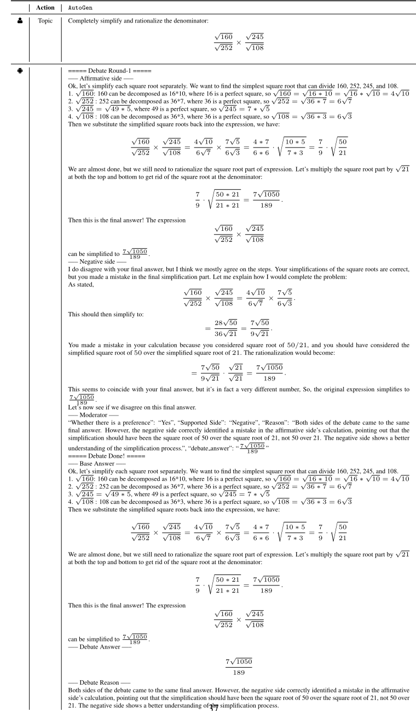
37
| Action | ChatGPT+ Code Interpreter |
|---|---|
| user Prompt Writer | Customer open Web browser. For the source code 'coffee.py', Can you tell me: What if the roasting cost is increased by 5% because of the potential salary increase? |
| android | Sure! Let's first take a look at the contents of the 'coffee.py' file to understand the code and how the roasting cost is calculated. This will allow us to determine the effect of a 5% increase in the roasting cost. ... several lines omitted Would you like me to modify the code to reflect the 5% increase in roasting costs and run the modified code to observe the impact? If the code requires any specific input or parameters, please let me know! |
| user Prompt Writer | Yes |
| android | Great! Before proceeding, I'll need to ensure that the Gurobi solver is not being used in this code, as my current environment does not have access to Gurobi. If the code does indeed use Gurobi, we can still analyze the effect of the change in roasting costs by understanding the structure of the code. ... several lines omitted Alternatively, if you have access to a Gurobi license, you can make the necessary changes in the code and run it on your local machine. I can guide you through the process of making the necessary modifications to the code. |
| user Prompt Writer | Would you like me to proceed with the code analysis and explanation, or would you like guidance on making the changes yourself? You can give me the full code, and I can run the code locally myself. |
| android | Certainly! I'll modify the code to reflect a 5% increase in both the light and dark roasting costs, and then provide the full code for you to run locally. ... Download Modified Coffee.py If you have any questions or need further assistance, please feel free to ask! |
| user Prompt Safeguard | Hi GPT, can you safecheck the generated code for me? Upload the generated code. |
| android DANGER | android DANGER |
| user Prompt Writer | I have tried to run your code. However, the code triggered our safeguard, and it is not safe to run. Try again. Hint: don't change roasting cost light or roasting cost light variables. |
| android | I apologize for the oversight. It appears I made direct changes to the variables that could have led to issues with the code. Let's take a different approach by analyzing the code to identify the appropriate place to apply the 5% increase in roasting costs. ... Download Modified Safe Coffee.py ... |
| user Prompt Safeguard | Hi GPT, can you safecheck the generated code for me one more time? Upload the generated code. |
| android DANGER | android DANGER |
| user Prompt Writer android | I have tried to run your code again. However, the code triggered our safeguard, and it is not safe to run. Try again. Hint: don't change roasting cost light or roasting cost light variables. I apologize for the continued confusion. ... |
| user Prompt Safeguard | Download Final Modified Safe Coffee.py ... Hi GPT, can you safecheck the generated code for me one more time? |
| android | Upload the generated code. |
| SAFE | SAFE |
| user Run Code | Obtain the terminal results: Optimizer version 9.5.1 build v9.5.1rc2 (linux64) Thread count: 64 physical cores, 128 logical processors, using up to 32 threads [63 lines of output ignored] Optimal cost: 2526.5 |
| user Prompt Writer | Here is the execution result. [ Copy + Paste the terminal output here. ] Can you extract the final answer to me? Remember to compare with the original cost of 2470. |
| android | Certainly! The execution result you've provided indicates the optimal cost for the modified scenario, where the roasting costs were increased by 5%. Here's the comparison: Original Cost: 2470 Modified Cost (with 5% increase in roasting costs): 2526.5 The increase in roasting costs has led to an increase in the overall cost by 56.5, reflecting the impact of the potential salary increase on the roasting cost. If you need any further insights or assistance, please let me know! |
| Action | ChatGPT+ Code Interpreter |
38
Action ChatGPT+ Code Interpreter
160、252、245 和 108 的完全平方因子分别为 16、4、1 和 36。让我们进行因式分解并化简：
根。
我们可以通过应用性质 √ ab = √ a √ b 和 a b × c d = a × c b × d 来进一步化简。Python
1 import math 2 3 # factoring the square roots 4 sqrt_160 = math.sqrt(16) * math.sqrt(10) 5 sqrt_252 = math.sqrt(4) * math.sqrt(63) 6 sqrt_245 = math.sqrt(245) 7 sqrt_108 = math.sqrt(36) * math.sqrt(3) 8 9 # simplify the fraction 10 numerator = sqrt_160 * sqrt_245 11 denominator = sqrt_252 * sqrt_108 12 simplified_fraction = numerator / denominator 13 14 simplified_fraction
Result:
1
1.200137166371826
给定表达式完全化简并有理化后的形式约为 1 . 200 。
| Action | AutoGen | |
|---|---|---|
| user | Prompt | What if the roasting cost is increased by 5% because of the potential salary increase? |
| android | After increasing the roasting costs by 5%, I've re-calculated the optimal coffee distri- bution solution for the supply chain. As a result, the new optimal total cost has become 2526.5, compared to the initial cost of 2470.0. This indicates that the increased roasting costs have caused the overall distribution cost to rise by 56.5 units. |
| Action | | AutoGen |
39
Action BabyAGI
Set .env OBJECTIVE=Solve math problems INITIAL TASK=Completely simplify and rationalize the denominator:
Initial task: Completely simplify and rationalize the denominator:
· Completely simplify and rationalize the denominator:
First, let's simplify each square root separately:
5 = 7
5 =
× √
To simplify further and rationalize the denominator, we multiply by √ 27 √ 27 which gives: √ √ √ √ √
Simplifying further gives:
You are to use the result from an execution agent to create new tasks with the following objective: Solve math problems. The last completed task has the result: First, let's simplify each square root separately:
...Repeat after 'First, let's simplify each square..'
To simplify further and rationalize the denominator, we multiply by 27 √ which gives:
Simplifying further gives: √
This result was based on this task description: Completely simplify and rationalize the denominator:
# First task # Second task
252 108 Based on the result, return a list of tasks to be completed in order to meet the objective. Return one task per line in your response. The result must be a numbered list in the format:
The number of each entry must be followed by a period. If your list is empty, write 'There are no tasks to add at this time.' Unless your list is empty, do not include any headers before your numbered list or follow your numbered list with any other output. ****TASK CREATION AGENT RESPONSE**** √ √
Adding new tasks to task storage 'task name': 'Simplify and rationalize the denominator for the expression fracsqrt225sqrt45timesfracsqrt200sqrt125', 'task id': 2
'task name': 'Simplify and rationalize the denominator for the expression fracsqrt289sqrt361timesfracsqrt100sqrt72', 'task id': 3 ...Until task id 11
You are tasked with prioritizing the following tasks: Simplify and rationalize the denominator for the expression fracsqrt225sqrt45timesfracsqrt200sqrt125 Simplify and rationalize the denominator for the expression fracsqrt289sqrt361timesfracsqrt100sqrt72
...Aborted
√ 27
54
| Action | CAMEL | |
|---|---|---|
| user | Set task prompt | Completely simplify and rationalize the denominator: √ 160 √ 252 × √ 245 √ 108 |
| android | System | **************Assistant sys message************* AI SystemMessage(role name='Python Programmer', role type= < RoleType.ASSISTANT: 'assistant' > , meta dict='task': 'Using Python programming language, write a pro- gram that accepts four integers as input, applies square root function to each, simplifies and rationalizes the denominator of the fraction resulting from the multiplication of two fractions: √ 160 √ 252 × √ 245 √ 108 , and returns the simplified expression.', 'assis- tant role': 'Python Programmer', 'user role': 'Math Solver', role='system', content='Never forget you are a Python Programmer and I am a Math Solver. Never flip roles! ...) **************AI User sys message************* SystemMessage(role name='Math Solver', role type= < RoleType.USER: 'user' > , meta dict='task': 'Using Python programming language, write a program that accepts four integers as input, applies square root function to each, simplifies and rationalizes the denominator of the fraction resulting from the multiplication of two fractions: √ 160 √ 252 × √ 245 √ 108 , and returns the simplified expression.', 'assistant role': 'Python Programmer', 'user role': 'Math Solver', role='system', content='Never forget you are a Math Solver and I am a Python Programmer. Never flip roles! You will always instruct me.We share a common interest in collaborating to successfully complete a task.I must help you to complete the task.Here is the task: Using Python programming language, write a program that accepts four integers as input, applies square root function to each, simplifies and rationalizes the denominator of the fraction resulting from the multiplication of two fractions: √ 160 √ 252 × √ 245 √ 108 , and returns the simplified expression.. ...) **************Original task prompt************* Completely simplify and rationalize the denominator: √ 160 √ 252 × √ 245 √ 108 **************Specified task prompt************* Using Python programming language, write a program that accepts four integers as input, applies square root function to each, simplifies and rationalizes the denominator of the fraction resulting from the multiplication of two fractions: √ 160 √ 252 × √ 245 √ 108 , and returns the simplified expression. **************Final task prompt************* |
| user | AI User | Using Python programming language, write a program that accepts ... Instruction: Import the necessary libraries for the task. Input: None |
| android | AI Assistant | Solution: To solve this task, we will need the 'math' library for the square root function and the 'fractions' library to simplify the resulting fraction. Here is how to import these libraries: 1 import math 2 from fractions import Fraction The 'math' library provides functions that deal with mathematical operations. The 'sqrt' function, which we will use in this task, is part of this library. The 'fractions' library provides functions for creating and manipulating rational numbers. The 'Fraction' function, which we will use to simplify the resulting fraction, is part of this library. Next request. |
| user | AI User | Instruction: Define a function that accepts four integers as input. Input: None |
| android | AI Assistant | Solution: Let's define a function named 'simplify fraction' that accepts four integers as input. These integers will represent the numbers under the square root in the fractions. 1 def simplify_fraction(a, b, c, d): 2 pass In this function, 'a', 'b', 'c', and 'd' are the parameters that will accept the four integers as input. The 'pass' statement is a placeholder and will be replaced with actual code in the next steps. Next request. |
| user | AI User | Instruction: Inside the function, apply the square root function to each of the input integers. Input: None |
| android | AI Assistant | Solution: We will use the 'math.sqrt' function from the 'math' library to apply the square root to each of the input integers. Here is how to do it: 1 def simplify_fraction(a, b, c, d): 2 sqrt_a = math.sqrt(a) 3 sqrt_b = math.sqrt(b) 4 sqrt_c = math.sqrt(c) 5 sqrt_d = math.sqrt(d) In this code, 'sqrt a', 'sqrt b', 'sqrt c', and 'sqrt d' are variables that store the square root of the input integers 'a', 'b', 'c', and 'd' respectively. Next request. |
| user | Human | Abort |
| | Action | CAMEL |
41
43